M.Hiroi's Home Page
http://www.geocities.jp/m_hiroi/
Lightweigth Language
お気楽 Ruby/Tk 超入門
チェックボタンとラジオボタン
メニューバーでチェックボタン (check button) とラジオボタン (radio button) を使いましたが、これはメニューだけではなくウィジェットとしても用意されています。チェックボタンは TkCheckbutton.new() で生成し、ON / OFF のような二者択一の情報を設定するために使います。ラジオボタンは TkRadiobutton.new() で生成し、複数の値からひとつを選ぶ場合に使います。
チェックボタンとラジオボタンはオプション text でボタンの名前を指定します。ラジオボタンを使う場合は、選択する値をオプション value で指定し、その値を格納するオブジェクトをオプション variable で指定します。また、オプション command を設定することもできます。この場合、ボタンの値が更新されると指定した関数が実行されます。チェックボタンは値が ON /OFF の 2 通りしかないので、variable に指定する TkVariable には真偽値を格納するといいでしょう。
簡単なプログラムと実行例を示します。
リスト : チェックボタンとラジオボタン
# coding: utf-8
require 'tk'
# フォントの設定
TkOptionDB.add('*font', 'Takaoゴシック 14')
opts1 = TkVariable.new(true)
opts2 = TkVariable.new(false)
opts3 = TkVariable.new(true)
action = TkVariable.new(1)
TkLabel.new(text: 'Check Button').pack
TkCheckbutton.new(text: 'option 1', variable: opts1).pack
TkCheckbutton.new(text: 'option 2', variable: opts2).pack
TkCheckbutton.new(text: 'option 3', variable: opts3).pack
TkLabel.new(text: 'Radio Button').pack
TkRadiobutton.new(text: 'action A', variable: action, value: 0).pack
TkRadiobutton.new(text: 'action B', variable: action, value: 1).pack
TkRadiobutton.new(text: 'action C', variable: action, value: 2).pack
Tk.mainloop
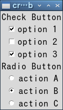 チェックボタンとラジオボタン
イメージとファイルの選択
今度は画像の取り扱いについて説明しましょう。Tk は GIF, PNG や PPM / PGM 形式の画像ファイルを扱うことができます。PPM はカラー、PGM はグレイスケールの画像を扱う、UNIX で標準的に用いられるベタフォーマットです。
●画像の生成
Ruby/Tk の場合、クラス TkBitmapImage が白黒のビットマップを表し、TkPhotoImage がカラーイメージを表します。そして、そのオブジェクトをラベルやボタンなどのウィジェットに使うことができます。たとえば、画像ファイルからイメージを作るには次のように行います。
リスト：画像の表示
require 'tk'
image1 = TkPhotoImage.new(file: 'earthris.gif')
TkLabel.new(image: image1).pack
Tk.mainloop
TkPhotoImage.new() は画像を表すオブジェクトを返します。オプション file は読み込む画像ファイルを指定します。earthris.gif は Tcl/Tk の配布パッケージに含まれている画像ファイルです。なお、このプログラムでは earthris.gif がカレントディレクトリにあることを仮定しています。ファイルがカレントディレクトリにないとエラーが表示されて動作しません。earthris.gif をカレントディレクトリにコピーするか、ファイル名の指定にパスを追加してください。
ラベルやボタンにイメージを表示するには、オプション image に画像のオブジェクトをセットします。image は TkPhotoImage.new() で作成した画像専用のオプションで、メソッド TkBitmapImage.new() で作成した画像はオプション bitmap にセットしてください。これでラベルにイメージが表示されます。
●ファイルの選択
それでは簡単な例題として、GIF / PPM の画像を表示するプログラムを作ります。Tk にはファイルを選択するためのコマンドが用意されていて、Ruby/Tk からも呼び出すことができます。
Tk.getOpenFile() 入力ファイルを選択
Tk.getSaveFile() 出力ファイルを選択
これらのメソッドを実行すると、ファイル選択のウィンドウ (ダイアログ) が開かれ、ウィンドウ上の操作でディレクトリをたどり、ファイルを選ぶことができます。使用できるオプションは次の通りです。
- initialdir: ディレクトリ
最初に選択されているディレクトリ
- initialfile: ファイル
最初に選択されているファイル（出力ファイルのみ有効）
- defaultextension: 拡張子
最初に選択されている拡張子
- filetypes: パターン
使用可能なファイル種別と拡張子を指定
- title: 文字列
ダイアログボックスのタイトル
このなかで重要なオプションが filetypes です。アプリケーションで扱うことができるファイル種別を拡張子で指定し、そのファイルだけを表示します。指定は文字列で行いますが、その表記法は Tcl/Tk とほぼ同じです。
filetypes: " ファイル種別 ... "
ファイル種別 := {名前 {拡張子 ... }}
名前に空白を入れたい場合は { } で囲ってください。たとえば、GIF / PPM ファイルを指定する場合は、次のようになります。
filetypes: "{{画像 Files} {.gif .ppm}}"
この場合は GIF と PPM ファイルが一緒に表示されます。次のように指定すると、表示するファイルをダイアログの操作で切り替えることができます。
filetypes: "{GIF {.gif}} {PPM {.ppm}} {ALL {*}}"
すべてのファイルを表示する場合は * を使います。また、空文字列 "" を指定すると、拡張子のないファイルを表示します。ファイルを選択すると、ファイル名をフルパス形式で返します。選択しない (キャンセル) 場合は、空文字列が返されます。
●画像ローダーの制作
それでは、簡単な画像ローダーを作ってみましょう。まず、メニューとラベルを設定します。
リスト : 画像ローダー (1)
# coding: utf-8
require 'tk'
# グローバル変数
$path_name = ""
$image_data = TkPhotoImage.new(width: 64, height: 64)
# ラベル
$label = TkLabel.new(image: $image_data)
$label.pack
# メニュー
m0 = TkMenu.new
Tk.root.configure(menu: m0)
m1 = TkMenu.new(m0, tearoff: false)
m1.add_command(label: 'Open', under: 0, command: proc { load_file })
m1.add_separator
m1.add_command(label: 'Exit', under: 0, command: proc { exit })
m0.add_cascade(label: 'File', under: 0, menu: m1)
Tk.mainloop
メニュー File の下に、ファイルを選択する Open とアプリケーションを終了する Exit の 2 つのメニューを設定します。次に、イメージとグローバル変数を定義します。$path_name は選択されたファイルのパスを格納しておきます。getOpenFile() にこのパスを指定することで、次にファイルを選ぶときは同じディレクトリから始めることができます。アプリケーションの開始時にはファイルは指定されていないので、空のイメージを作って表示しておきます。あとは、画像ファイルをロードする本体を作ります。
リスト：GIF/PPM ローダー(2)
# ファイルの選択
def load_file()
filetype = "{{Image Files} {.gif .png .ppm}} {{GIF Files} {.gif}} {{PNG Files} {.png}} {{PPM Files} {.ppm}} {{All Files} {*}}"
filename = Tk.getOpenFile(filetypes: filetype, initialdir: $path_name)
if filename != ""
$path_name = File::dirname(filename)
p $path_name
$image_data = TkPhotoImage.new(file: filename)
$label.configure(image: $image_data)
end
end
getOpenFile() でファイル名を取得したら、関数 File::dirname() でパスを取り出してグローバル変数 $path_name にセットします。dirname() はファイル名からパス部分を取り出して返します。
ファイル名をゲットしたら、それが空文字列でないことを確認します。次に、新しいイメージを TkPhotoImage.new() で生成します。最後に、ラベルの configure() で表示するイメージを変更します。これで選択した画像ファイルを表示することができます。
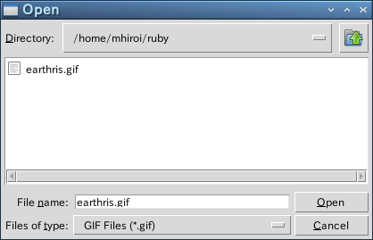 表示するファイルの選択
ダイアログ
GUI アプリケーションの場合、ボタンを押すとかメニューを選ぶといった操作は、基本的にはユーザーが自由に行うことができます。ところが、ある操作をしないと次の処理に進めない場合があります。たとえば、画像を表示する場合、表示するファイル名をユーザーから入力してもらわないと、画像ファイルを表示することはできません。このときによく使われるのが ダイアログ (dialog) です。
前回はファイル選択を行うメソッド getOpenFile() を使いましたが、このとき表示されたウィンドウがダイアログです。ダイアログは重要なメッセージを表示するために開かれるウィンドウで、画面の前面に表示され、ユーザーがダイアログに応答しないかぎり、そのアプリケーションではほかの操作を行うことはできません。
●メッセージボックス
Ruby/Tk の場合、メソッド Tk.messageBox() を使うと簡単にダイアログを表示することができます。ダイアログの種別はオプション icon (アイコン) と type (キー種別) で指定します。
icon : error, info, question, warning
type : abortretryignore, ok, okcancel, retrycancel, yesno, yesnocancel
Tk.messageBox() を実行すると、メッセージを表示してユーザーがボタンを押すまで待ちます。オプション title でダイアログのタイトルを、オプション message でダイアログに表示する文字列を指定します。Tk.messageBox() は押したボタンの種別を文字列で返します。
簡単なプログラムを示します。
リスト：messageBox のサンプル
# coding: utf-8
require 'tk'
$type = TkVariable.new(0)
$type_table = ['abortretryignore', 'ok', 'okcancel',
'retrycancel', 'yesno', 'yesnocancel']
$icon = TkVariable.new(0)
$icon_table = ['error', 'info', 'question','warning']
TkLabel.new(text: 'TYPE').pack
for x in 0..5
TkRadiobutton.new(text: $type_table[x], variable: $type, value: x).pack(anchor: 'w')
end
TkLabel.new(text: 'ICON').pack
for x in 0..3
TkRadiobutton.new(text: $icon_table[x], variable: $icon, value: x).pack(anchor: 'w')
end
def message_box
p Tk.messageBox(title: 'about',
type: $type_table[$type.numeric],
icon: $icon_table[$icon.numeric],
message: "messageBox のサンプルです")
end
TkButton.new(text: "Open message box",
command: proc {message_box}).pack
Tk.mainloop
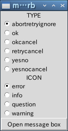 メインウィンドウの画像
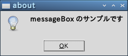 メッセージボックス info, ok の画像
 メッセージボックス warning, retrycancel の画像
メッセージボックス warning, retrycancel の画像
●ダイアログの作成
このほかに Ruby/Tk には、ダイアログを生成するクラス TkDialog が用意されています。ダイアログは TkDialog.new() で生成します。TkDialog の主なオプションを表に示します。
表 : TkDialog の主なオプション
| オプション | 機能 |
|---|
| title | ダイアログのタイトルを指定 |
| message | ダイアログに表示する文字列 |
| bitmap | ダイアログに表示するビットマップ |
| buttons | ボタン名 (文字列) を格納した配列 |
| default | デフォルトボタンを指定 |
一般に、bitmap には Tk で用意されているビットマップを指定します。イメージを指定することはできないので注意してください。ボタンはいくつでも設定することができ、配列に格納した順番で表示されます。TkDialog.new() は TkDialog のオブジェクトを返します。インスタンスメソッド value を呼び出すと押されたボタンの番号を求めることができます。たとえば、buttons に ['yes', 'no'] を指定した場合、yes を押すと 0 がセットされ、no を押すと 1 がセットされます。
それでは、TkDialog を使ってメッセージを表示してみましょう。
リスト : TkDialog のサンプル
require 'tk'
# フォントの指定
TkOptionDB.add('*font', 'Takaoゴシック 14')
# ダイアログの生成
def message_window
TkDialog.new(title: 'About',
bitmap: 'info',
message: 'Dialog のテストです',
buttons: ['Yes', 'No'],
default: 0).value
end
# メニューの設定
m = TkMenu.new
Tk.root.configure(menu: m)
m.add_command(label: 'About', under: 0,
command: proc { p message_window })
# ラベルの設定
TkLabel.new(text: 'メニュー About を選んでね').pack
Tk.mainloop
メニュー About が選択されたら、関数 message_window() を実行してダイアログを表示します。bitmap には info を指定しました。このほかに、error, hourglass, questhead, question, warning などがあります。ボタンは Yes と No のふたつです。default には 0 を指定したので、Yes のボタンがデフォルトになります。
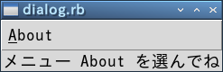 メインウィンドウの画像
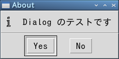 TkDialog の画像
キャンパス
今度は図形を表示する キャンバス (canvas) ウィジェットを説明します。キャンバスは、矩形、直線、楕円などの図形のほかに、イメージ、文字列、任意のウィジェットを表示することができます。キャンバスウィジェットは TkCanvas.new() で生成します。次のプログラムを実行すると、空のウィンドウが表示されます。
リスト：キャンバスウィジェット
require 'tk'
TkCanvas.new(width: 150, height: 150).pack
Tk.mainloop
これで図形を表示するキャンバスをウィンドウに配置したことになります。また、キャンバスとスクロールバーを組み合わせて、表示範囲を変更することもできます。
●図形の生成
キャンバスを配置しただけでは、なにも図形は描かれていません。図形を生成するには次表に示すクラスを使います。
表：図形クラス
| TkcLine | 直線（折れ線） |
| TkcOval | 楕円 |
| TkcArc | 円弧（楕円の円周の一部） |
| TkcRectangle | 矩形 |
| TkcPolygon | 多角形 |
| TkcImage | イメージ |
| TkcBitmap | ビットマップ |
| TkcText | 文字列 |
| TkcWindow | 任意のウィジェット |
実際にはメソッド new を使って図形を生成します。第 1 引数には図形を配置するキャンバスオブジェクトを指定します。あとは描画クラス固有の引数とオプションを指定します。
●楕円を描く
それでは実際に図形を表示してみましょう。
リスト：楕円の描画
require 'tk'
c0 = TkCanvas.new(width: 150, height: 150)
ov = TkcOval.new(c0, 10, 10, 140, 140)
c0.pack
Tk.mainloop
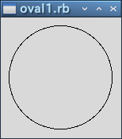 楕円の描画
ウィンドウに楕円が描画されました。楕円の場合、指定した矩形に内接するように描画されます。TkcOval.new() の返り値は図形を表すオブジェクトです。これを使って図形を操作することができます。Ruby/Tk の場合、図形オブジェクトでもメソッド cget() や configure() を使うことができます。また、キャンバスのメソッド itemcget() と itemconfigure() でも同じことができます。たとえば、楕円の中を赤色に塗りつぶしてみましょう。次の 1 行を追加してください。
ov.configure(fill: 'red') # c0.itemconfigure(ov, fill: 'red') でも可能
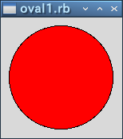 楕円の描画 (塗りつぶし)
楕円の中が赤くなりました。よく使われるオプションには次のものがあります。
- fill: 色
内部を塗りつぶす色
- stipple: ビットマップ
内部を塗りつぶすときの模様になるビットマップ
- outline: 色
枠の色
- width: 幅
枠の幅（デフォルトは 1.0）
なお、M.Hiroi が使用しているバージョン (Ruby 2.3) では、図形クラスの new() の引数でオプションを指定するとエラーになります。この場合、オプションは他の方法で指定してください。たとえば、ブロックの中で指定する場合は次のようになります。
リスト : ブロックでオプションを指定する方法
# (1)
widgetClass.new(args, ...) {
option1 value1
option2 value2
...
}
# (2)
widgetClass.new(args, ...) {|obj|
obj.option1 value1
obj.option2 value2
...
}
(1) の場合、ブロックの中では変数 self で widgetClass のオブジェクトにアクセスすることができます。option1 value1 は self.option1 value1, self.option1(value1), self.option1 = value1 のように記述してもかまいません。(2) の場合、ブロックの引数 obj に widgetClass のオブジェクトが渡されます。
●矩形を描く
矩形も楕円と同じ指定方法です。stipple には、Tk に標準で組み込まれているビットマップを指定するのが一般的です。よく使うビットマップが灰色の模様を表す gray12, gray25, gray50, gray75 です。それでは実際に描画してみましょう。
リスト：矩形の描画
require 'tk'
c0 = TkCanvas.new(width: 150, height: 150)
TkcRectangle.new(c0, 10, 10, 140, 140) {
fill 'green'
stipple 'gray25'
}
c0.pack
Tk.mainloop
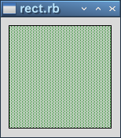 矩形の描画
●直線を描く
次は直線です。2 点間だけではなく複数の点を指定すると、その間を直線で結びます。では、直線を描画してみましょう。
リスト：直線の描画
require 'tk'
c0 = TkCanvas.new(width: 150, height: 150)
ln = TkcLine.new(c0, 10, 10, 140, 10, 10, 140, 140, 140)
c0.pack()
Tk.mainloop
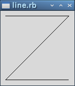 直線の描画
画面に Z 字型の線が描かれましたね。線の色を指定するオプションは、直線の場合は outline ではなくて fill で指定します。fill: 'green' で線を緑色に、width: 2.0 で線を太くしてみましょう。
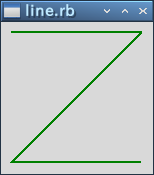 直線の色と太さを変更
オプション smooth を真 (true) に指定すると、滑らかな曲線を描画することができます。
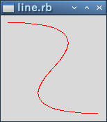 直線の描画 (smooth 指定)
このほかにも、矢印の設定や折り返しのときの形など、いろいろなオプションが用意されています。
●多角形を描く
次は多角形です。五角形を作ってみましょう。各頂点の座標を指定しますが、最初の点と最後の点が結ばれて閉じた図形となります。
リスト：多角形の描画
require 'tk'
c0 = TkCanvas.new(width: 150, height: 150)
TkcPolygon.new(c0, 75, 10, 140, 70, 110, 140, 40, 140, 10, 70)
c0.pack()
Tk.mainloop
polygon では、デフォルトで fill オプションが黒、outline は描画されません。それから、line と同様に smooth を真 (true) に指定すると、多角形の角を丸めます。実際に試してみてください。
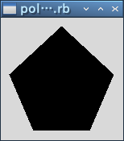 多角形の描画
●円弧を描く
次は円弧です。楕円の円周の一部分を表示します。座標の指定は oval と同じですが、オプションで表示する範囲を指定します。
- start: 角度
開始位置を角度で指定
- extent: 角度
終了位置を開始位置からの角度で指定
- style: 種別
arc : 円周のみ描画
chord : 円周と始点終点を結ぶ線分
pieslice : 円周と中心から始点、終点を結ぶ線分
角度は度数でプラスが反時計回り、マイナスが時計回りとなります。また、oval と同じオプションが使えます。ただし、style が arc の場合、fill で色を指定しても表示されません。chord か pieslice に変更すると表示されます。
●イメージの表示
キャンバスはイメージとビットマップも表示することができます。
TkcImage.new(canvas, x, y, オプション, ... )
TkcBitmap.new(canvas, x, y, オプション, ... )
x, y は表示する座標を表します。イメージのどの位置に対応させるかは、オプション anchor で指定します。これは pack() と同じ指定方法です。データとの対応は image と bitmap で指定します。たとえば、earthris.gif (Tcl/Tk 配布パッケージ内のファイル) を表示するには、次のようにプログラムします。
リスト：イメージの表示
require 'tk'
c0 = TkCanvas.new(width: 400, height: 300)
c0.pack()
image_data = TkPhotoImage.new(file: 'earthris.gif')
TkcImage.new(c0, 200, 150){
image image_data
}
Tk.mainloop
これでキャンバスの中央にイメージが描画されます。
●文字列の表示
次は文字列です。当然ですがキャンバスに文字を描くことができます。
TkcText.new(canvas, x, y, オプション, ...)
x, y は座標で、オプションには次のものが使えます。
- anchor: 位置
座標とテキストの位置関係
- font: フォント
文字のフォント
- fill: 色
文字の色
- justify: mode
center:中揃え, left:左揃え, right:右揃え
- text: 文字列
表示する文字列
- width: 長さ
1 行の長さ
それでは実際に試してみましょう。
リスト：テキストの表示
# coding: utf-8
require 'tk'
c0 = TkCanvas.new(width: 150, height: 150)
TkcText.new(c0, 75, 75){
text 'hello, world!'
font 'Takaoゴシック 14'
}
c0.pack
Tk.mainloop
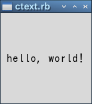 テキストの描画
これでウィンドウの中央に hello, world! が表示されます。
●ウィジェットの挿入
キャンバス中にほかのウィジェットを表示させる場合は TkcWindow.new() を使います。
- anchor: 位置
座標とウィジェットの位置関係
- window: ウィジェット
表示するウィジェット
- width: 幅
ウィジェットの幅
- height: 高さ
ウィジェットの高さ
たとえば、ラベルを表示させてみましょう。
リスト：ラベルウィジェットの表示
# coding: utf-8
require 'tk'
c0 = TkCanvas.new(width: 150, height: 150)
a0 = TkLabel.new(text: 'hello, world!', bg: 'green',
font: 'Takaoゴシック 14')
TkcWindow.new(c0, 75, 75) {|w|
w.window a0
}
c0.pack
Tk.mainloop
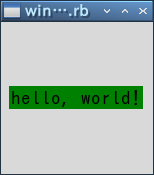 ラベルの描画
今度は背景色が緑の hello, world! が表示されました。
●図形操作用メソッド
キャンバスで使用できる図形を一通り説明したところで、図形を操作するときによく使うメソッドを示します。
表：図形操作用メソッド
| c.bbox(item, ...) | 指定した図形を囲む領域 (矩形) を配列に格納して返す |
| c.coords(item, x0, y0, ...) | 図形の座標の設定や問い合わせ |
| c.delete(item, ...) | 図形の削除 |
| c.move(item, dx, dt) | 図形の移動 |
| c.lower(item1, item2) | 重なり順を低くする |
| c.raise(item1, item2) | 重なり順を高くする |
| c.itembind(item, event, callback, args, ...) | バインディングの設定 |
c はキャンパスウィジェットのオブジェクト、item は図形オブジェクト表します。ウィジェットと同様に、図形に対してもバインディングを設定することができます。また、item には「タグ (tag)」を指定することもできます。バインディングはタグと一緒に詳しく説明します。
タグとバインド
●バインディングの設定
キャンバスで作成した図形にはバインディングを設定することができます。簡単な例題として、作成した矩形をドラッグで移動させてみましょう。次のプログラムを実行してください。
リスト：バインディングの設定 (1)
# coding: utf-8
require 'tk'
$c0 = TkCanvas.new(width: 200, height: 150)
$c0.pack()
$rc = TkcRectangle.new($c0, 10, 10, 20, 20) {
fill 'brown'
}
# 移動
def move_rect(x, y)
$c0.coords($rc, x - 5, y - 5, x + 5, y + 5)
end
# バインディング
$rc.bind('Button1-Motion', proc {|x, y| move_rect(x, y) }, '%x %y')
Tk.mainloop
最初に、一辺の長さが 10 の矩形を作ります。次に、その矩形に対してバインディングを設定します。イベント 'B1-Motion' は、左ボタンを押した状態でマウスを動かした場合、つまりドラッグに対応します。関数 move_rect() は新しい座標を計算して、図形の位置を coords() で変更します。
なお、bind() のほかにキャンバスのメソッド itembind() を使っても同じことができます。
$c0.itembind($rc, 'Button1-Motion', proc {|x, y| move_rect(x, y) }, '%x %y')
●タグの設定
それでは、操作する矩形を 3 つに増やしてみましょう。それぞれの矩形にバインディングを設定してもいいのですが、同じようなプログラムをいくつも書くのは面倒です。このような場合、タグ (tag) を設定すると簡単にプログラムを記述することができます。タグには荷札という意味があり、図形に識別子をつける働きをします。
図形には複数のタグを設定することができます。そして、図形を操作するメソッドは、操作対象となる図形の指定を、オブジェクトのほかにもタグを使って行うことができるのです。タグの設定は図形を生成するときにオプション tags で行います。それでは矩形にタグをセットして 3 つ作ります。
リスト：バインディングの設定 (2)
# coding: utf-8
require 'tk'
$c0 = TkCanvas.new(width: 200, height: 150)
$c0.pack
TkcRectangle.new($c0, 10, 10, 20, 20) {
fill 'brown'
tags 'brown'
}
TkcRectangle.new($c0, 20, 10, 30, 20) {
fill 'brown'
tags 'brown'
}
TkcRectangle.new($c0, 30, 10, 40, 20) {
fill 'brown'
tags 'brown'
}
# 移動
def move_rect(x, y)
$c0.coords('current', x - 5, y - 5, x + 5, y + 5)
end
# バインディング
$c0.itembind('brown', 'Button1-Motion',
proc {|x, y| move_rect(x, y)}, '%x %y')
Tk.mainloop
タグは文字列で指定します。今回は brown としました。このタグに対して itembind() でバインディングを設定します。この場合、図形オブジェクトではなくタグ brown を指定します。ただし、このままでは関数 move_rect() で操作対象となる矩形がわかりません。この場合、特別なタグ current を使います。
current は Ruby/Tk が設定するタグで、マウスカーソルがある図形上にくると、その図形にタグ current を設定し、その図形からマウスカーソルから出るとタグ current を削除します。つまり、マウスカーソルが指している図形はタグ current で指定することができるのです。これで、複数の矩形をひとつの関数で操作することができます。
このほかにも、タグには図形をまとめて操作することができる、という利点があります。たとえば、矩形の色をまとめて変更する場合は、タグを使って行えばいいのです。
$c0.itemconfigure('brown', fill: 'green')
これでタグ brown の図形の色を green に変更することができます。削除する場合もタグを使えば簡単です。
$c0.delete('brown')
これでタグ brown の図形をすべて削除することができます。
Copyright (C) 2016 Makoto Hiroi
All rights reserved.